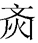

自题小像[430]
灵台无计逃神矢，风雨如磐暗故园。[431]
寄意寒星荃不察，我以我血荐轩辕。[432]
注 释
[430] 本篇据作者1931年重写手迹收入。原无题目，下注“二十一岁时作，五十一岁时写之，时辛未二月十六日也。”许寿裳在《新苗》第十三期（1937年1月）发表的《怀旧》一文中说：“1903年他二十三岁，在东京有一首《自题小像》赠我。”鲁迅于1932年12月9日曾将此诗书赠日本医生冈本繁，诗中“矢”作“镞”。
[431] 灵台 心。《庄子·庚桑楚》：“不可内（纳）于灵台。”晋代郭象注：“灵台者，心也。”神矢，爱神的箭。参看本卷第32页注〔1〕。风雨如磐，唐代贯休《侠客》诗：“黄昏风雨黑如磐，别我不知何处去。”
[432] 荃不察 屈原《离骚》：“荃不察余之中情兮，反信谗而

怒。”轩辕，即黄帝，我国传说中的上古帝王，汉民族的始祖。《史记·五帝本纪》：“黄帝者，少典之子，姓公孙，名轩辕。”